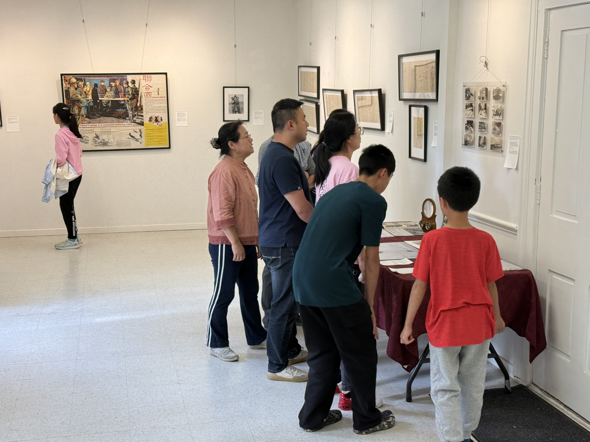

Contact
Help preserve, study, and share the history of the Far East.
- Telephone
- (647) 779-5286
In the press
Work with us
Museums, archives, universities, researchers, educators, community groups, and volunteers are welcome. Contact us about exhibitions, research, translation, public programs, or archival preservation.
